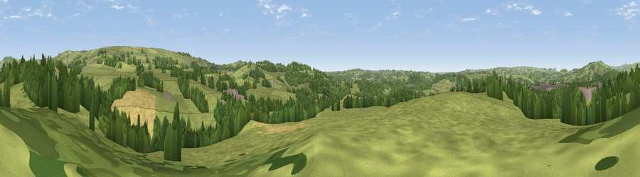

Lowe Hill
#31305 in England · top 56% of its area beats it · near BradnopThe view, rendered

A 360° render of this exact spot computed from the terrain model, tree cover and land cover — summer colours, afternoon light, calibrated against photographs of famous viewpoints. Real trees, hedges and buildings will differ in detail.
The panorama
Grey silhouette: terrain skyline in each direction (720 bearings, Earth curvature and refraction included). Dashed green: skyline with trees (+15 m) and buildings (+8 m) as obstacles. Blue strip: how far the ground is visible on each bearing.
Where the view opens
Wedge length = distance to the farthest visible ground on that bearing (vegetation-aware). Rings at 10, 25 and 50 km.
What fills the view
67% grassland · 22% woodland · 7% cropland · 4% built-up
Angular shares of the visible panorama (visual magnitude), not map area. Landscape diversity 0.40 (0–1 Shannon).
Key numbers
More beautiful places nearby
The staircase of upgrades: each row has a higher view potential than everything closer. Driving times are estimates from straight-line distance, calibrated against real road routing — check an actual route before setting out.
| Place | Direction | Drive | Score |
|---|---|---|---|
| Viewpoint near Bradnop | NNE · 1 km | ~2 min | 44.0 |
| Viewpoint near Bradnop | ENE · 3 km | ~8 min | 65.3 |
| Viewpoint near Thorncliffe | NE · 5 km | ~12 min | 66.5 |
| Viewpoint near Meerbrook | N · 8 km | ~15 min | 72.1 |
| Viewpoint near Meerbrook | N · 8 km | ~16 min | 73.2 |
| Viewpoint near Meerbrook | N · 9 km | ~17 min | 73.5 |
| Viewpoint near Timbersbrook | NW · 12 km | ~23 min | 74.4 |
| Viewpoint near Wootton | SE · 13 km | ~24 min | 74.8 |
53.09513, -2.00705 · source: osm peak · position refined by local search. Computed location — check access rights before visiting.